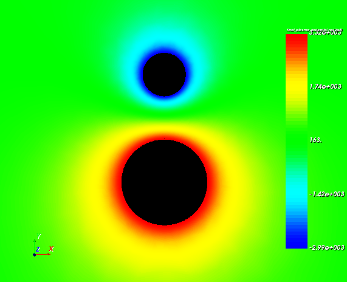
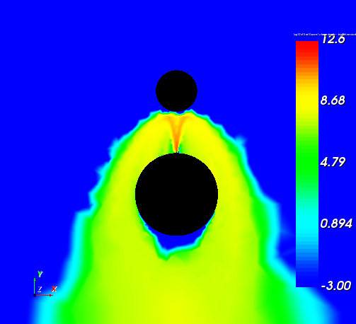
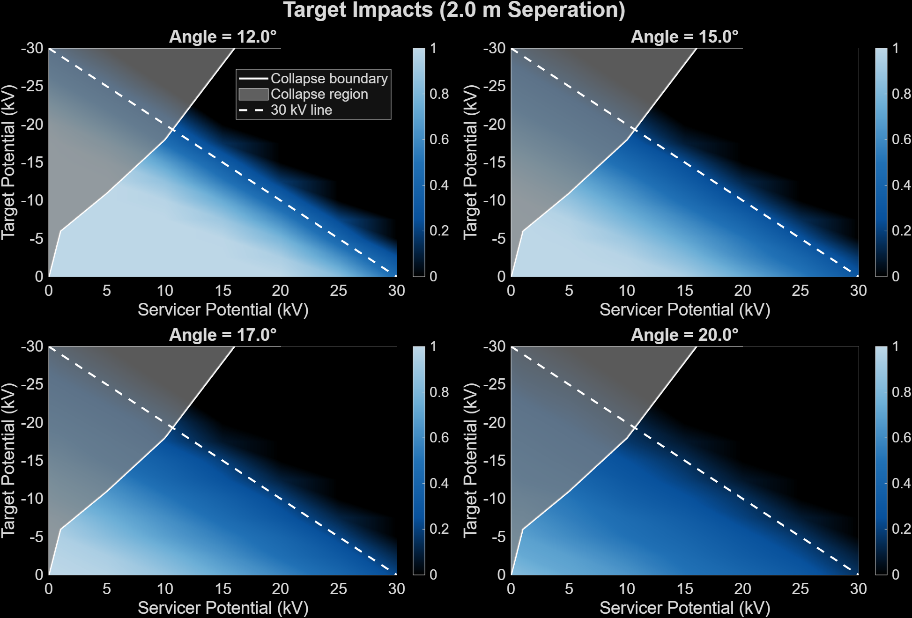

SPIS · SIMION · MATLAB
Electrostatic Tractor Supercharging
Discovery Learning Apprenticeship · CU Boulder
I used SPIS, SIMION, and MATLAB to investigate plasma wakes, electron-beam behavior, and conditions that support supercharging for electrostatic debris removal.

Research question
An electron beam can charge a servicer positively and a target negatively, producing an attractive electrostatic force. I studied how placing the target in a plasma wake changes charging behavior and helps sustain a potential difference beyond the beam’s energy-per-charge equivalent.
Plasma-wake and charging simulations
I performed SPIS plasma-wake and spacecraft-charging simulations, including wake characterization and supercharging cases. The validation case begins with a −3 kV target and +2 kV servicer, a 5 kV potential difference, and a 5 keV electron beam.

Electron-beam studies
I used SIMION and MATLAB to study beam width, target impacts, and electron recollection. The comparison examines target impacts at 2 m separation for several beam angles and spacecraft potentials, helping evaluate the tradeoff between reaching the target and retaining useful charge.

Validation and application results
In the validation case, the servicer reaches approximately +3.32 kV while the target remains near −3 kV. The presentation reports a 71.2% increase in calculated electrostatic force. A separate application case first charges with a 15 keV beam, then maintains 96.3% of the initial calculated force after reducing beam energy to 5 keV at the same current. These are simulation-specific results, not hardware test measurements.
Research context
This work was completed through CU Boulder’s Discovery Learning Apprenticeship with graduate mentor Kaylee Champion and faculty advisor Hanspeter Schaub. My contributions included SPIS and SIMION modeling, MATLAB analysis, wake characterization, beam-width work, and validation/application studies.